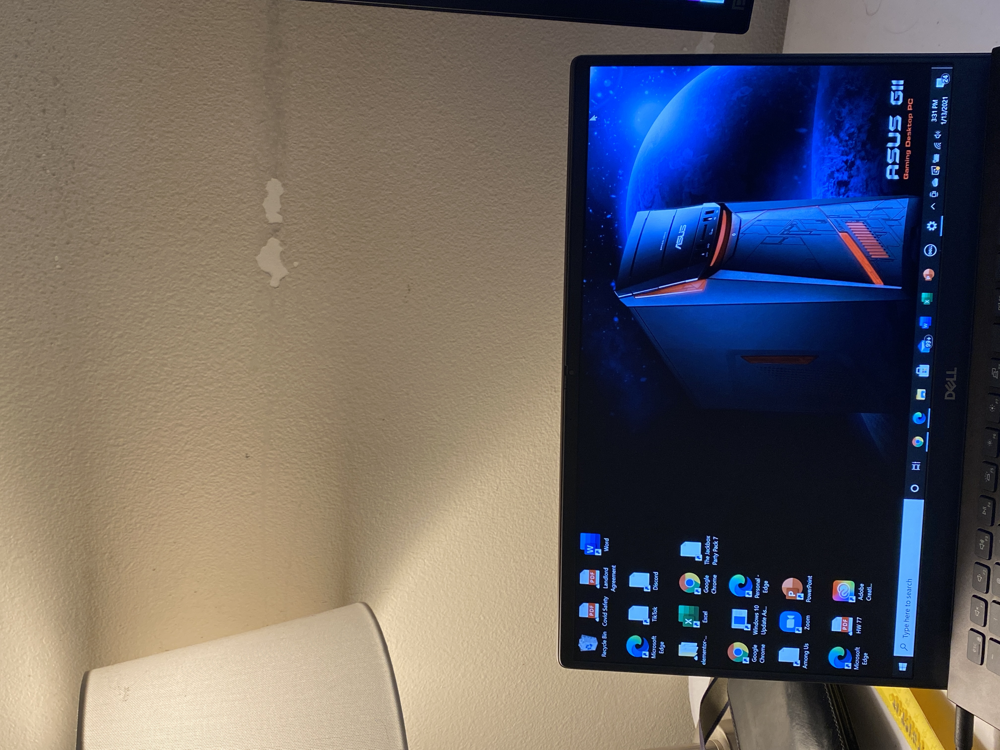
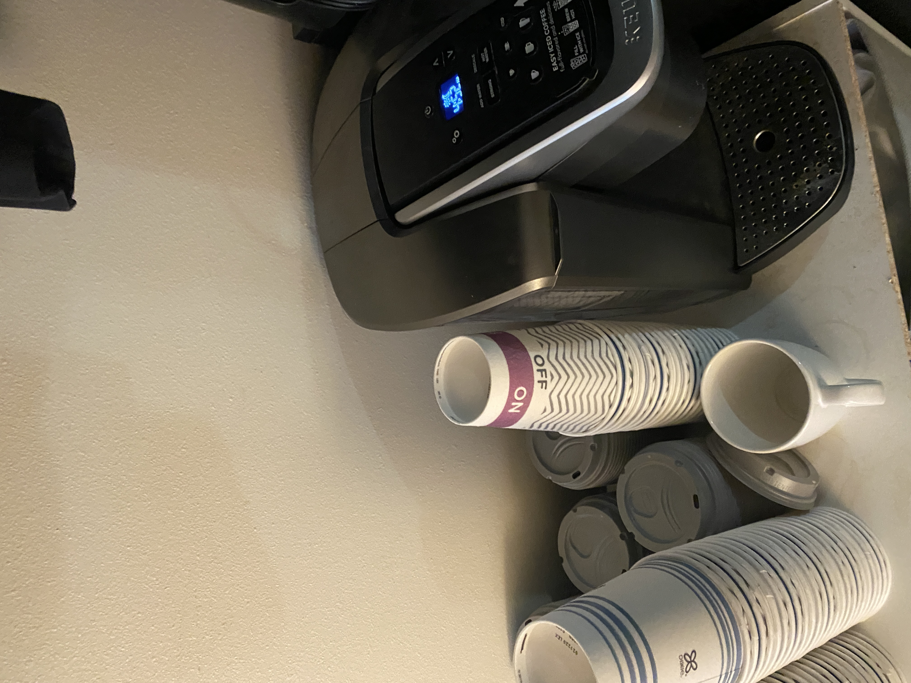

Paragraphs with different fonts
This is the first paragraph with Arial Font
This is the second paragraph with Georgia Font
Two pictures that were orignally different sizes resized to 50px by 50px

Setting a blue text outline and convert text to small caps (not taught in class)
This Css Feature of the blue outline with 2px size was not taught in class and converting text to small caps
The Text "Centered" that is centered on a photo
A photo with 20 pixel margins on each side
Text with a border that uses dotted line
This is text with dotted lines
A button with rounded border corners
Creating a floated image to the right
